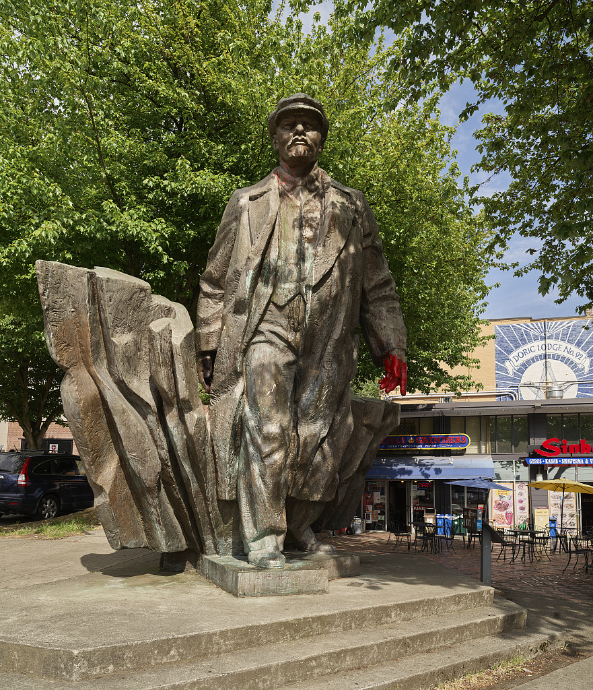
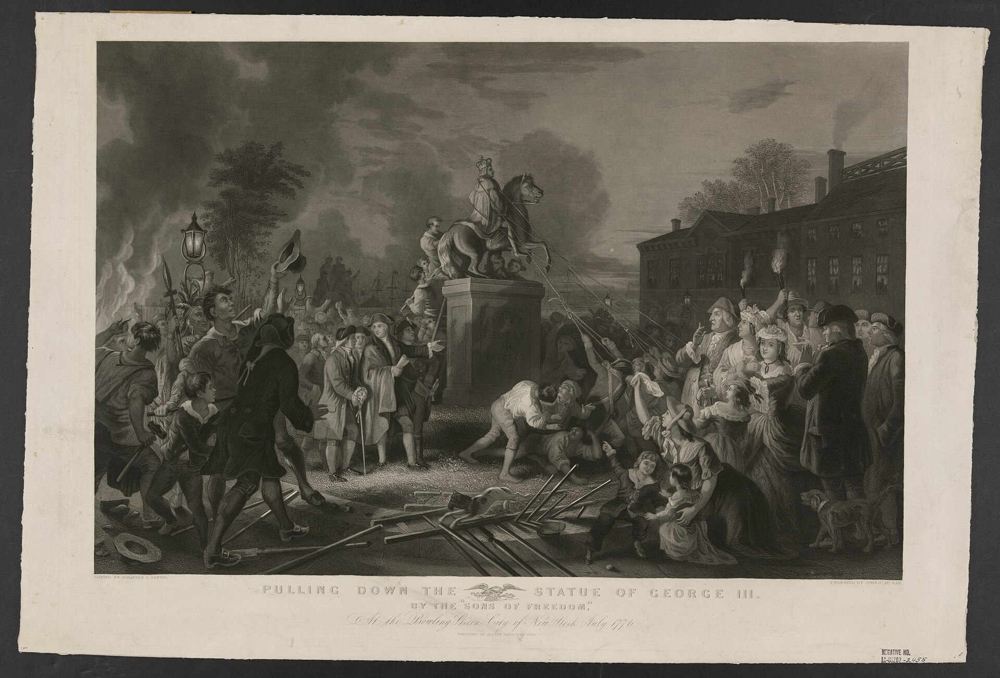
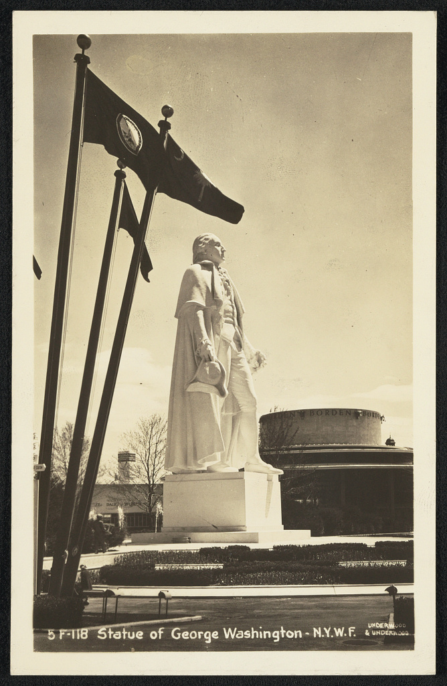

The Lenin standing at a Fremont intersection has been for sale for thirty years. The Republic has melted a statue before, and it knew what to cast next.
At the corner of Fremont Place North and North 36th Street, a sixteen foot bronze of Vladimir Lenin stands over a retail plaza, seven tons of metal on a corner where people wait for the light. It has been there since 1995, long enough that most of Seattle has stopped seeing it. Fremont's official line is that the statue is a joke the neighborhood is in on, an ironic trophy in the self-declared Artistic Republic of Fremont, dressed in holiday lights each December and repainted with red hands by protesters most years in between.

The sculptor did not think it was a joke. Emil Venkov, a Bulgarian-born Slovak artist, won the commission from the Communist Party of Czechoslovakia in a 1981 competition and spent most of the decade on the figure. Where the standard-issue Lenin holds a book or waves a cap, Venkov's Lenin strides forward out of a wall of abstracted rifles and fire. Venkov said later that he had smuggled his real subject past the commissars: not the father of the Soviet state but the violence that made it. The statue went up in Poprad, Czechoslovakia, in 1988, at a cost of 334,000 koruna. It stood for about a year. The Velvet Revolution arrived in 1989, and the town pulled it down.
Lewis Carpenter, an English teacher from Issaquah working in Poprad, found the statue lying face down in a municipal scrapyard with a homeless man sheltering inside the hollow bronze. He decided a work of that quality should not be cut apart for salvage, whatever its subject. On March 16, 1993 he signed a contract with the city of Poprad to buy the statue for $13,000, then mortgaged his house to cover roughly $40,000 in shipping, and sent seven tons of Lenin around the world to his backyard in Issaquah. He was killed in a car crash in February 1994, before he could find it a home.
His family nearly melted it down then. Peter Bevis of the Fremont Fine Arts Foundry intervened, and in 1995 the Fremont Chamber of Commerce agreed to hold the statue in trust and display it until a buyer appeared. It was unveiled on June 3, 1995, and moved a block to the present corner the following year. The arrangement has never changed: the display is officially temporary, and the statue is officially for sale, and both of those facts are now thirty years old.
The Fremont Lenin, by the record
Owner: the heirs of Lewis Carpenter, held in trust by the Fremont Chamber of Commerce since 1995
Status: for sale since 1995; asking $150,000 in 1996, $250,000 or best offer by 2015
Commission: 35 percent to the Chamber, earmarked for local artists
Land: a 3,992 square foot privately owned corner parcel; the display is temporary by the terms of the trust
City jurisdiction: none, conceded by the mayor's office in 2017 and by state legislators in 2019
Every few years someone demands the city take the statue down, and every few years the city correctly answers that it cannot. After Charlottesville in 2017, protesters gathered at the corner and Mayor Ed Murray said Seattle should not idolize figures of atrocity, while acknowledging the city had no power over a private statue on private land. A 2019 bill in the state legislature made the same discovery. The demands fail because they are addressed to the wrong party. There is no city approval to seek and no council vote to win. There is a family that has been waiting three decades for a buyer, a chamber of commerce that earns a commission on the sale, and a private landowner whose corner hosts the display at sufferance. The Lenin question is not a political fight. It is a transaction.
The Republic has faced this exact situation before, at its founding, and its answer is one of the best stories it owns. On July 9, 1776, after the Declaration of Independence was read aloud to Washington's troops in New York, a crowd marched to Bowling Green and pulled down the gilded equestrian statue of George III that had stood there for six years. The lead was carted to Litchfield, Connecticut, where by the count kept at the time it was melted into 42,088 musket balls for the Continental Army. The statue of the king was fired back at the king's soldiers. No American monument has ever said more with less.

And when the Republic wanted to say what it was for rather than what it was against, it knew the answer to that too. In 1939 the New York World's Fair opened on the 150th anniversary of Washington's first inauguration, which had taken place in the same city, and the fair's organizers raised James Earle Fraser's statue of Washington on Constitution Mall, sixty five feet of him counting the base, facing the Trylon and Perisphere in his inaugural robes. Fraser was the sculptor of the buffalo nickel and End of the Trail, and his Washington was called the largest portrait statue of the modern era. It was built of plaster because it was built for a fair, and it came down when the fair closed. The ambition was real; only the material was temporary. That is precisely backwards from how a republic should build, and we have already filed our position on materials.

Buy the Lenin. Melt it. Cast a George Washington from the bronze.
The purchase is the easy part; the statue has been waiting for its buyer since 1995, and the sale terms are public. The foundry work is the old, well-understood kind. And the symmetry does the rest of the work on its own. Venkov's subject, by his own account, was the violence of the Soviet founding. Melting that bronze and recasting it as the first president is not the erasure of a monument, it is the completion of one: the same metal, redeemed the same way the Republic redeemed the king at Bowling Green, except that where 1776 turned a tyrant into ammunition, 2026 can turn one into a founder. The metal keeps its history. Guns and flame go in; Washington comes out.
The destination argues for itself. Washington is the only American state named for a president, and its largest city keeps exactly one notable statue of him, the bronze Lorado Taft made for the 1909 Alaska-Yukon-Pacific Exposition, standing quietly on the university campus. The state that carries the name can do better than one campus statue and a Soviet leftover, and the Republic's 250th year is the right calendar to do it on. A new Washington, cast from the Fremont bronze, would be the only monument in the country whose provenance runs Poprad to Puget Sound through the fall of the Soviet bloc, and Fremont's corner does not need to lose its landmark to make it happen: the neighborhood that hosted Lenin ironically for thirty years has first claim on hosting whatever is cast in his place, and a commission worthy of the corner is part of the proposal, not an afterthought.
Burnham Civic's position on monuments is on the record: permanent materials, symbolically loaded ground, and private funding models with a 140 year American pedigree, argued at length in A Brief for American Ambition. The Fremont Lenin is the local test of the same doctrine, and it is the cheapest test in the country, because the removal everyone has argued about for thirty years was never blocked by politics. It was blocked by the absence of a buyer with a better idea for the metal.
The better idea is on the table. Seven tons of bronze, a founding-era precedent, a state that carries the name, and a neighborhood corner that keeps its landmark. Someone is going to write that check eventually. The 250th year is the time, and the West Coast has the foundries. We file accordingly.